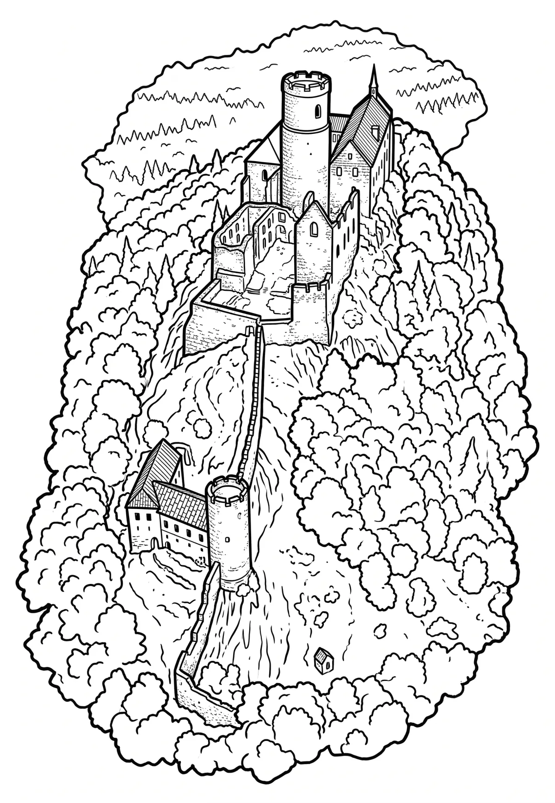

Bezděz
Liberecký kraj · 604 m n. m.

historická památka · #004
Bezděz je zřícenina hradu v Chráněné krajinné oblasti Kokořínsko – Máchův kraj u stejnojmenné obce v okrese Česká Lípa v Libereckém kraji. Hrad se nachází na vrchu Bezděz (606 m n. m.) v národní přírodní rezervaci Velký a Malý Bezděz v Dokeské pahorkatině, šest kilometrů jihovýchodně od města Doksy. Je chráněn jako národní kulturní památka a v návštěvních hodinách je přístupný veřejnosti.